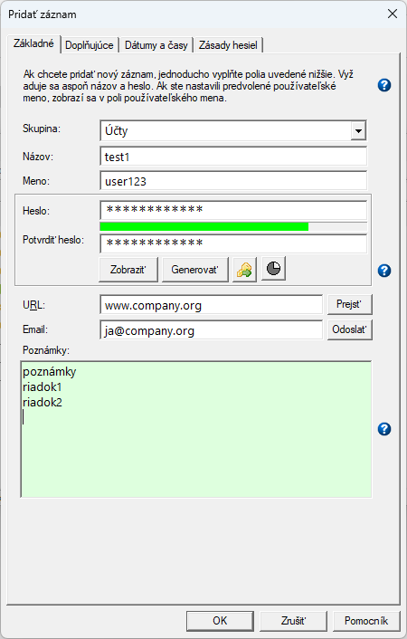
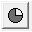
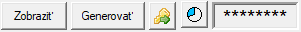
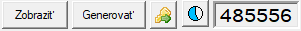
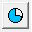

Zásady hesiel: pravidlá generovania náhodných hesiel
Väčšina polí na kartách Základné a Doplňujúce sú inteligentné polia.
To znamená, že keď na ne kliknete, aktuálny obsah príslušného poľa
sa skopíruje do schránky. Pole zabliká aby signalizovalo, že údaje boli skopírované.
Aktuálne inteligentné polia sú:
karta Základné
Skupina
Názov
Používateľské meno
Heslo
URL
Email
Poznámky
karta Doplňujúce
Automatické dopĺňanie
Spustiť príkaz
Poznámka: Stlačením klávesu Ctrl a kliknutím na polia Automatické dopĺňanie a Spustiť príkaz
sa premenné pred skopírovaním do schránky nenahradia v reťazcoch, ale skopíruje sa definícia daného poľa.
Karta Základné
Táto karta obsahuje najdôležitejšie a najčastejšie používané prvky.

Ku každému záznamu hesla sú priradené nasledujúce informácie:
Skupina: Názov na zoskupenie (organizovanie) niekoľkých súvisiacich záznamov
Názov: "Priateľský názov" pre záznam hesla
Meno: Používateľské meno ako súčasť prihlasovacích údajov spolu s heslom
Heslo: Heslo s ukazovateľom sily hesla pod ním
URL: URL (webová stránka) priradená k tomuto záznamu
Email: Emailová adresa priradená k tomuto záznamu
Poznámky: Všeobecné poznámky vo voľnom formáte
Povinné sú iba polia Názov a Heslo; všetky ostatné sú voliteľné.
Kliknutím na tlačidlo sa heslo skopíruje do schránky.
Sivé tlačidlo Overovací kód () naznačuje, že pre tento záznam nebol nastavený tajný kľúč pre generovanie overovacích kódov/TOTP tokenov v rámci dvojfaktorovej autentifikácie (pozri karta Doplňujúce).
Keď je nastavený tajný kľúč, tlačidlo je aktívne a animované, a aktuálny overovací kód je možné zobraziť kliknutím na okno, ktoré sa zobrazí napravo od tlačidla:


Kliknutím na animované tlačidlo Overovací kód () sa aktuálny overovací kód (6-miestna hodnota TOTP tokenu) skopíruje do schránky.
Hodnota sa mení každých 30 sekúnd a schránka sa bude podľa toho automaticky aktualizovať, kým sa databáza neuzamkne alebo sa do schránky neumiestni niečo iné.
Pole Poznámky je určené pre krátke texty a je
obmedzené na 30 000 znakov. Hoci je možné pri pridávaní položky pridať viac znakov,
pri opätovnom otvorení databázy sa zobrazí upozornenie. Pole Poznámky sa skráti
na tento limit, ak sa položka upraví. Ak je však položka chránená alebo databáza je otvorená
v režime iba na čítanie, je možné si ju zobraziť bez akéhokoľvek skrátenia.
Obsah poľa Poznámky je možné upravovať pomocou externého editora
kliknutím pravým tlačidlom myši na pole. Upozorňujeme však, že obsah sa dočasne uloží
na disk ako čistý text. Okrem toho niektoré externé editory
použijú existujúcu inštanciu na úpravu dočasného textového súboru, čo spôsobí že
Password Safe sa okamžite vráti a údaje zostanú nezmenené, aj keď
je dočasný textový súbor stále dostupný v externom editore. Ak to externý
editor podporuje, je možné zadať parametre príkazového riadka, aby sa vynútila
nová inštancia na úpravu poľa Poznámky, čím sa tomu zabráni (napríklad: "-multiInst" pre editor Notepad++).
Pozrite si príslušné Nastavenie na karte "Rôzne".
Ak zadáte parametre príkazového riadka, neuzatvárajte ich do úvodzoviek, pokiaľ to váš zvolený externý editor nevyžaduje.
Zadaná hodnota bude použitá tak ako je: bez zmien.
Okrem toho je možné na tejto karte nastaviť nasledujúce polia:
URL: URL adresa priradená k záznamu. Ak toto pole nie je prázdne, tlačidlo "Prejsť"
je povolené. Ak protokol nie je zadaný, predpokladá sa "http://"
(napr. "www.foo.net" je to isté ako "http://www.foo.net"). Kliknutím na tlačidlo Prejsť napravo
od poľa URL sa otvorí predvolený prehliadač na zadanej URL adrese. Kliknutím so stlačeným klávesom Ctrl
sa navyše spustí funkcia AutoType na otvorenej stránke prehliadača.
Viac informácií nájdete v nasledujúcich poznámkach.
Email: Emailová adresa priradená k tomuto záznamu. Upozorňujeme,
že toto slúži len na uchovanie e-mailovej adresy priradenej k stránke, napr. support@myvendor.com.
Ak stránka vyžaduje emailovú adresu ako prihlasovacie meno, je treba nastaviť vašu emailovú adresu v poli Používateľské meno.
Ak toto pole nie je prázdne, tlačidlo "Odoslať" je aktívne. Kliknutím na toto tlačidlo sa spustí predvolený poštový program s poľom Komu: nastaveným na zadanú adresu.
Ďalšie možnosti nájdete v nasledujúcich poznámkach.
Niekoľko podrobností o spracovávaní URL:
V predvolenom nastavení bude Password Safe používať prehliadač, v ktorom váš
počítač zvyčajne otvára webové stránky. V prípade potreby môžete určiť
alternatívny prehliadač tak že pred URL adresu zadáte reťazec "[alt]", napr. "[alt]http://www.foo.net".
Toto je užitočné napríklad, ak je vaším predvoleným prehliadačom Firefox a
chcete pristupovať k webovej stránke, ktorá najlepšie funguje s prehliadačom Chrome.
Ak chcete nakonfigurovať alternatívny prehliadač, použite dialógové okno v Nastaveniach na karte
"Rôzne".
Ak sa pred URL adresu vloží reťazec "{alt}", adresa sa odovzdá
"tak ako je" alternatívnemu prehliadaču, teda bez pridania reťazca "http://", ak
nie je zadaný žiadny protokol. Toto je užitočné, ak je alternatívny prehliadač
aplikáciou pre vzdialený prístup, napr. klientom SSH. Podobne, [ssh] dosiahne
rovnaký efekt.
Ak sa pred URL adresou nájde "[autotype]", potom po zobrazení URL/vykonaní akcie nad adresou Password Safe vykoná akciu AutoType
pomocou poľa AutoType tejto položky (alebo predvolenej hodnoty ak nie je zadaná pre tento záznam).
Emailová adresa je v súlade so štandardnými pravidlami (podľa RFC 2368):
Adresa môže byť jedna alebo viac platných emailových adries oddelených bodkočiarkou, pričom sa použijú znaky "bezpečné pre internet". Ako medzeru použite %20.
Za adresou môže nasledovať jeden alebo viac párov názov-hodnota. Prvý
pár by mal mať predponu "?" a všetky ďalšie páry by mali mať predponu
ampersand (&). Názov môže byť jeden z nasledujúcich reťazcov:
subject – nasledované textom, ktorý sa má zobraziť v predmete správy.
body – nasledované textom, ktorý sa má zobraziť v tele správy.
CC – nasledované adresami, ktoré sa majú uviesť v časti "kópia" (cc).
BCC – nasledované adresami, ktoré sa majú uviesť v časti "skrytá kópia" (bcc).
Otvorte databázu, do ktorej chcete umiestniť nový záznam
V menu Upraviť vyberte možnosť Pridať záznam
V prípade potreby zadajte informácie do polí dialógového okna Upraviť záznam
Poznámka: Ak je vybraný názov skupiny a potom je pridaný nový záznam,
tento záznam bude mať tento názov skupiny predvyplnený v dialógovom okne Upraviť záznam/Zobraziť záznam.
Ak je do poľa Skupina pridaný názov novej skupiny, táto skupina bude následne vytvorená.
Ak chcete, môžete do poľa pre heslo zadať vlastné heslo ručne alebo môžete nechať aplikáciu Password Safe vygenerovať nové heslo
pomocou aktuálnych Zásad hesiel.
Ak chcete, aby vám aplikácia Password Safe vygenerovala heslo, stačí kliknúť na tlačidlo Generovať
v dialógovom okne Upraviť záznam. Ak nie ste s výsledkom spokojní,
môžete znova kliknúť na tlačidlo Generovať alebo heslo upraviť manuálne.
Ukazovateľ sily pod poľom Heslo poskytuje približnú predstavu o sile hesla. Červená farba označuje slabé heslo, žltá stredne silné heslo a zelená silné heslo.
Poznámka: Ak používate systém "Single Sign-on" (SSO), ktorý vám umožňuje
zdieľať rovnaké heslo na rôznych počítačoch/v aplikáciách atď., môžete nastaviť záznamy Password Safe tak, aby zmena
jedného hesla ovplyvnila všetky ostatné súvisiace záznamy. Toto sa nazýva "aliasovanie"
záznamov a je podrobne vysvetlené v téme Vytváranie aliasov.
Úprava existujúcich záznamov
Vyberte záznam, ktorý chcete upraviť zo zoznamu
Vyberte možnosť Upraviť záznam... z menu Upraviť
Úprava existujúcich záznamov prostredníctvom stromového zobrazenia
Vyberte záznam, ktorý chcete upraviť zo zoznamu a potom:
Vyberte Upraviť záznam... z menu UpraviťALEBO
Kliknite pravým tlačidlom myši na záznam a v kontextovej ponuke vyberte Upraviť záznam
Polia, ktoré sa zobrazujú v stromovom zobrazení, môžete zmeniť priamo.
Postup:
Kliknite pravým tlačidlom myši na skupinu a v kontextovej ponuke vyberte Premenovať skupinuALEBO
Stlačte klávesovú skratku na premenovanie (predvolene F2) a prepíšte zobrazený text (formát je "názov [používateľské meno] {heslo}").
Poznámky:
Štandardne sa používateľské mená a heslá nezobrazujú v stromovom zobrazení.
Zobrazenie používateľského mena a hesla sa riadi nastaveniami (pozri:
karta Zobrazenie). Fungujú v hierarchii, t.j. heslá sa môžu
zobraziť iba vtedy, ak sú zobrazené aj používateľské mená.
Heslá sú tiež štandardne pri úprave záznamu skryté. Ak chcete zobraziť
heslo spojené s položkou, kliknite pri jej úprave na tlačidlo Zobraziť.
Názov a heslo sú jediné povinné polia pre záznam. Preto, ak
sa počas premenovania vynechajú, zachovajú si svoje predchádzajúce hodnoty.
Pole s používateľským menom však môžete vymazať, pokiaľ je zobrazené,
zadaním "[]" počas premenovania, čo znamená prázdnu hodnotu.
Keďže na oddelenie používateľského mena a hesla sa používajú hranaté a zložené zátvorky,
NIE je možné premenovať položku na mieste (napr. pomocou klávesu F2), ak názov, používateľské meno
(ak je zobrazené) alebo heslo (ak je zobrazené) obsahujú niektorý z týchto znakov. Namiesto toho musíte
položku upraviť buď prostredníctvom menu Upraviť, alebo prostredníctvom kontextovej ponuky kliknutím pravým tlačidlom myši,
ako je uvedené vyššie.
Pridanie novej skupiny cez stromové zobrazenie
V menu Upraviť vyberte možnosť Pridať skupinu
Zadajte názov skupiny
Úprava názvu skupiny
Kliknite pravým tlačidlom myši na skupinu a v kontextovej ponuke vyberte možnosť Premenovať skupinu
alebo
Vyberte skupinu a stlačte klávesovú skratku na premenovanie (predvolene F2) a prepíšte názov skupiny.
Poznámky:
Názvy skupín je možné "vnorovať", t.j. umiestniť názov skupiny do/pod iný názov skupiny.
Skupinu nemožno premenovať na viacero skupín pomocou položky menu Premenovať skupinu alebo skratky, t.j. skupinu "a" nemožno premenovať na "x.y".
Zamknuté záznamy
Ak je záznam zamknutý, nebudete môcť zmeniť žiadne polia, kým nezrušíte ochranu záznamu
prostredníctvom menu Upraviť alebo kontextovej ponuky kliknutím pravým tlačidlom myši.
 sa heslo skopíruje do schránky.
sa heslo skopíruje do schránky.